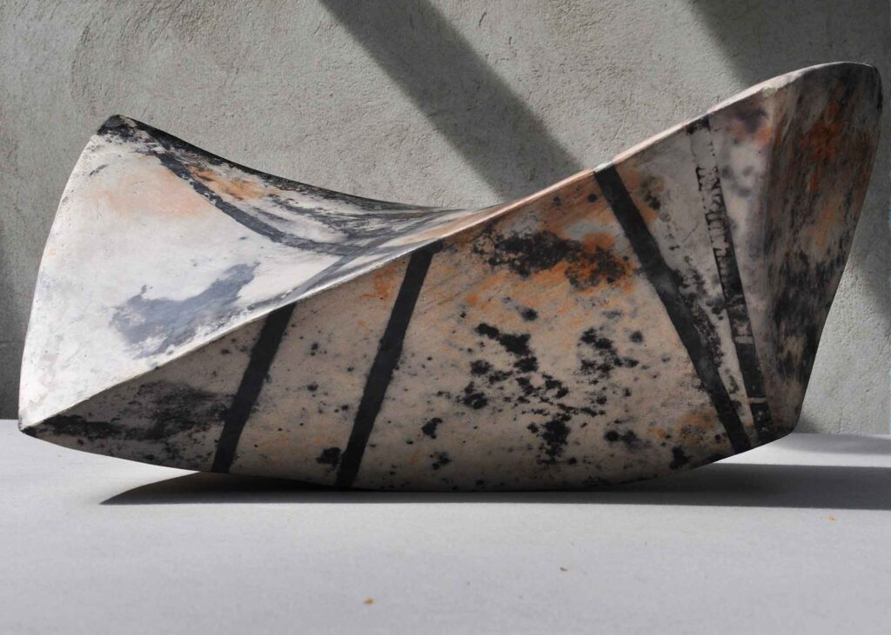
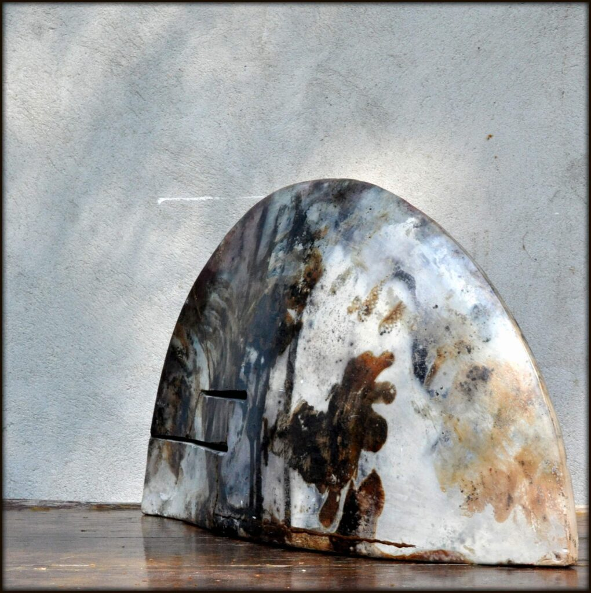
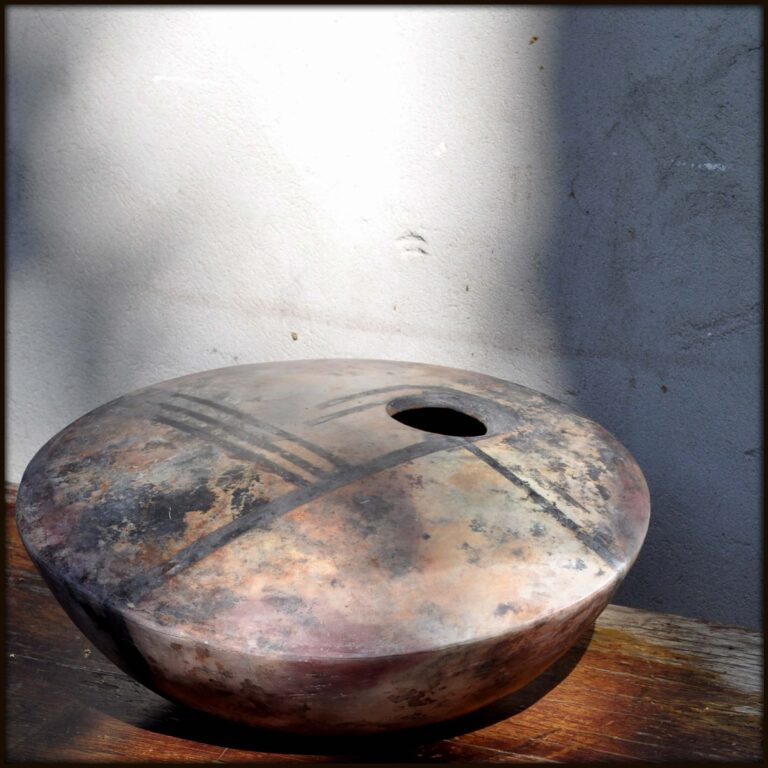
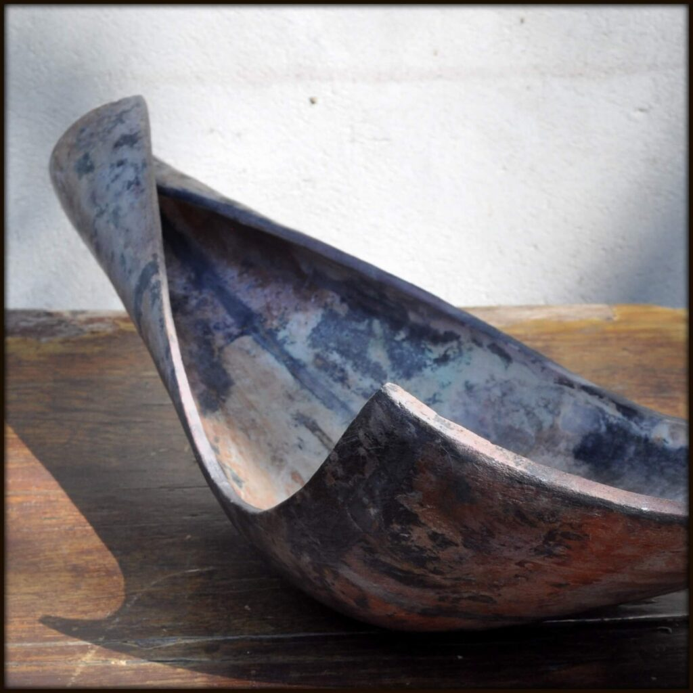
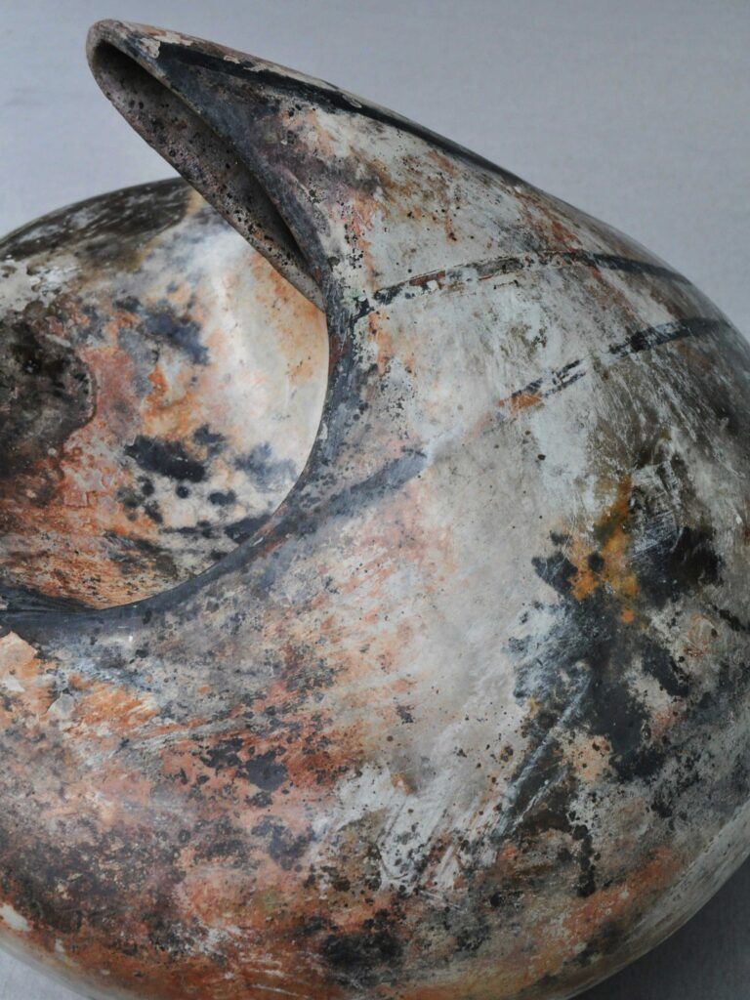

Pit-fire
Wypał neolityczny (dołowy, pit fire) nawiązuje do najbardziej prymitywnej metody wypalania z użyciem drewna. Formy ceramiczne zbiskwitowane można wcześniej wypolerować. Aby uzyskać mocne plamy kolorystyczne, na powierzchnię nanosi się sole i tlenki metali. Można też użyć odpadków organicznych, np. wysuszonych skórek banana, kawy, wodorostów. Organiczne dodatki dają delikatniejsze efekty.
Ogień od góry schodzi coraz niżej, aż żar zejdzie na sam dół. Temperatura powinna osiągnąć około 1000 stopni Celsjusza.




